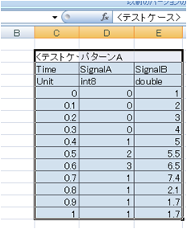
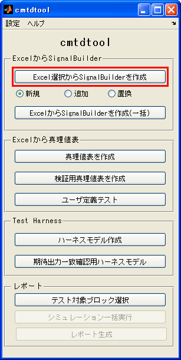
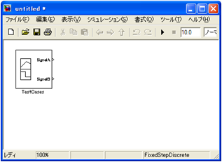
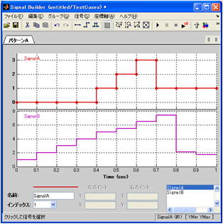
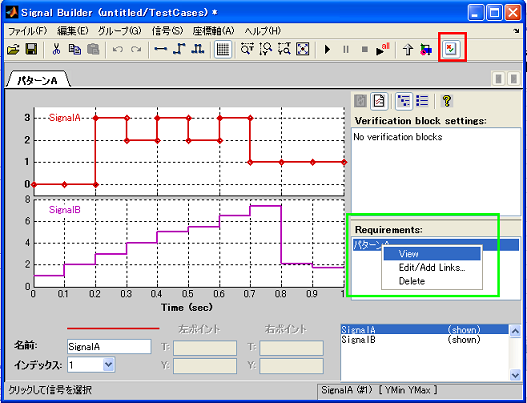

Excelの選択箇所をSignalBuilderブロックに出力
- MATLAB R2007a以降対応
Contents
概要
(1) SignalBuilder化したい範囲を選択

(2) SignalBuilderを作成 ボタンをクリック

(3) SignalBuilderブロックを作成（もしくは追加、置換）


テストパターン記述ルール
- 1行目： 左端のセルにテストケース名を記述
- 2行目： 時間、信号名1, 信号名2,... を記述
- 3秒目： データタイプ名を記述 (double, single, int8, uint8, int16, uint16, int32, uint32, boolean) ※現時点で固定小数点には未対応
- 4行目以降： 時系列データを記述
注意事項
- 「新規」の場合には、選択列数-1がSignalBuilderブロックからの出力ポート数となる
- 「追加」、「置換」の場合には、選択されているSignalBuilderブロックに含まれる信号数と、選択列数-1が一致しなくてはならない
- データタイプ名はSignalBuider上では現在使用されていません。この機能を使用した際にMATLABワークスペース上に作成される変数 simdata において使用されています。
SignalBuilderからExcelへのリンク機能
Simulink Verification and Validation のライセンスが利用中のMATLABに存在する場合、 SignalBuilderブロックに作成された信号グループに対し、Excelの選択箇所へのリンクが 自動的に設定されます。
SignalBuilderブロックから、その元となるExcelの選択箇所を確認するためには、 SignalBuilderブロック上の「検証設定の表示」ボタン(下図赤枠)をクリックし、 「Requirements」欄に表示されているラベル名で右クリック→「View」を選択します。 (下図緑枠)

デモの実行方法
- cmtdtoolフォルダ内 cmtdtool_sampledata.xls を開く
- TestVectorsタブのC2:E15 を選択する
- cmtdtool 上で「新規」ラジオボタンを選択した状態で「SignalBuilderを作成」ボタンをクリックする
- 新規モデルが作成され、SignalBuilderブロック上にExcelの時系列データが作成されていることを確認
- TestVectorsタブのC17:E21 を選択する
- 上記(4)で作成された SignalBuilderブロックをマウスクリック(カレントのブロックに)する
- cmtdtool 上で「追加」ラジオボタンを選択した状態で「SignalBuilderを作成」ボタンをクリックする
- 上記(4)で作成されたSignalBuilderブロック上の新しい信号グループにExcelの時系列データが作成されていることを確認する
- コマンドウィンドウから以下を実行することでGUIと同様な操作が実行可能であることを確認
xls2SignalBuilder('cmtdtool_sampledata.xls','テストベクタ','C2:E15','','new'); xls2SignalBuilder('cmtdtool_sampledata.xls','テストベクタ','C17:E21',[bdroot '/TestCases'],'append');